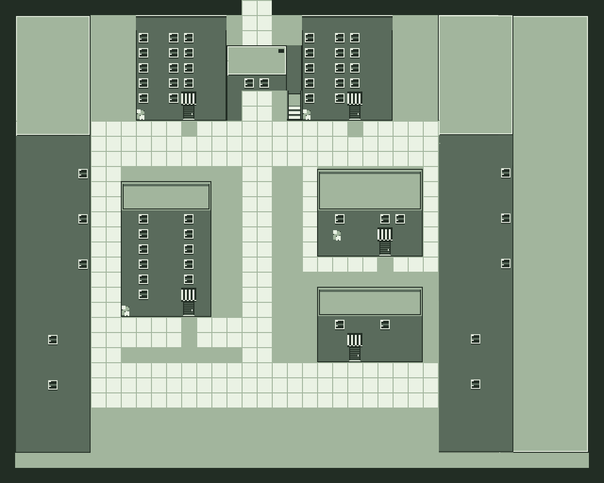
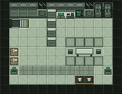

OctoCrystal Sanctum
Live PlayableDeterministic seeded HD-2D JRPG roguelike combining Octopath Break & Boost tactical combat with Final Fantasy V-style Job switching, BFS-verified dungeon generation, and shadowcasting FOV.
MSc Computer Science student at Queen Mary University of London (BA Economics & Management, 2:1) and Technical Specialist at Apple. Explore interactive browser demos of my software engineering projects alongside low-level Game Boy Advance (ARM7TDMI) C engine modules, database vector-retrieval labs, and brutalist pixel-art architecture.
Deterministic seeded HD-2D JRPG roguelike combining Octopath Break & Boost tactical combat with Final Fantasy V-style Job switching, BFS-verified dungeon generation, and shadowcasting FOV.
Offline-first Progressive Web App featuring a Service Worker cache strategy, dynamic day-of-week & 4-phase habit engine, hydration tracker, and an animated 5-minute Cyclic Physiological Sigh breathing coach.
Semantic passage retrieval across 11,992 classic literature paragraphs using 1,500-dimensional IDF-weighted word embeddings and cosine similarity, paired with a zero-dependency Python CLI engine.
Unbeatable Minimax AI built across three architectures: a dark-mode browser client (Easy / Medium / Unbeatable + 2-Player), a Python FastAPI REST service, and a Tkinter Desktop / CLI app.
Minimalist client-side habit and streak tracker with a dynamic SVG daily progress ring, 14-day interactive completion matrix, and HTML5 Canvas confetti celebrations.
Original C modules implementing true roguelike permadeath with checksummed Flash Sector 31 meta-persistence (gmk_permadeath.c), bounty enlistment UI (gmk_bounty.c), an ARM out-of-bounds crash postmortem, and 2.16s 12-core builds.
Isolated local MySQL sandbox script plus 4-stage SQL labs covering InnoDB B+Tree indexing, EXPLAIN diagnostics, a deterministic SQL DISTANCE() polyfill on native VECTOR(8) columns, and pure-SQL JSON RAG prompt assembly.


